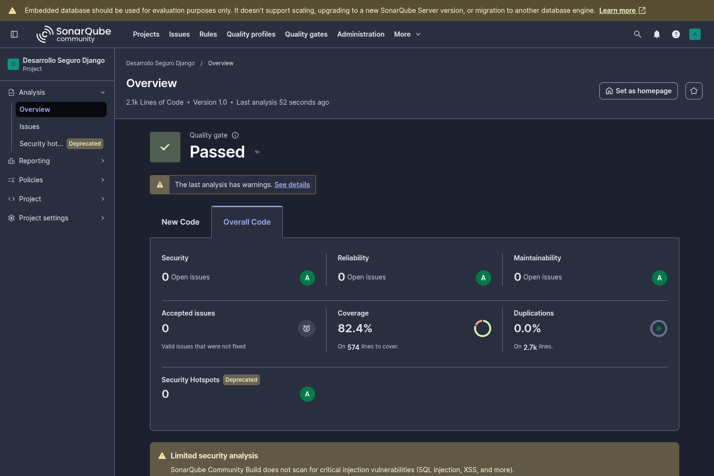
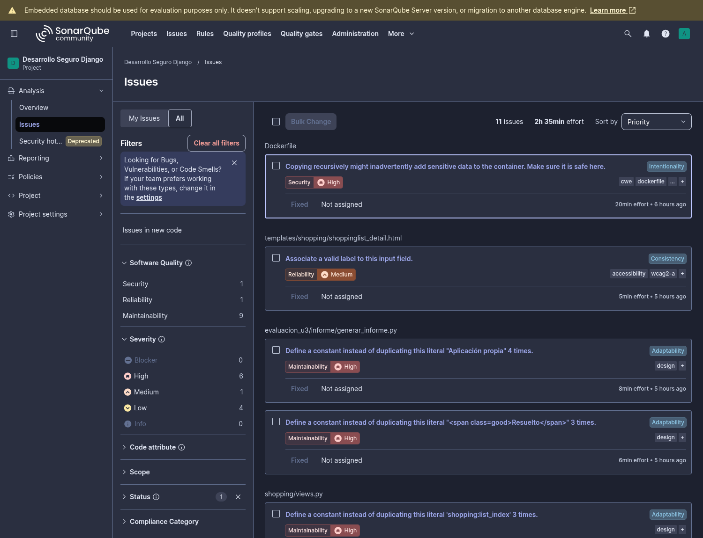
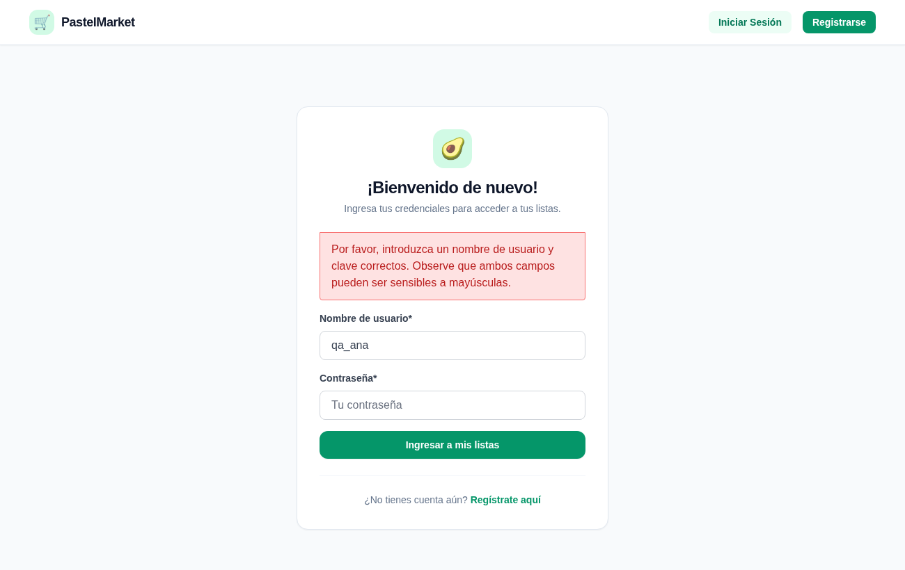
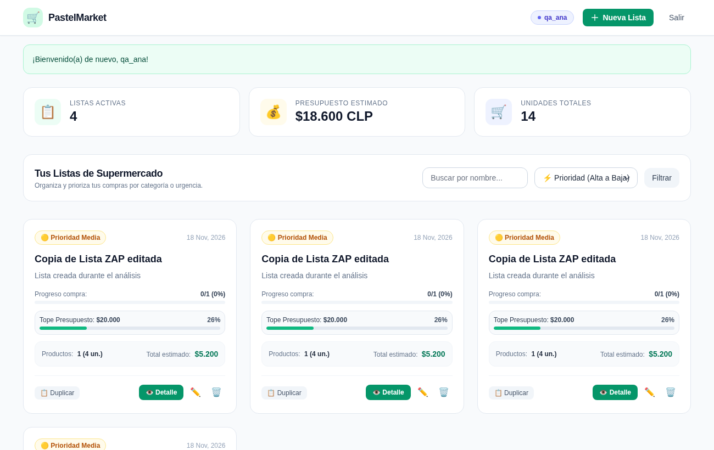
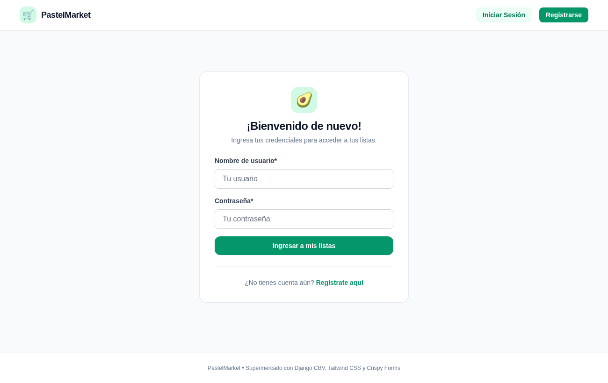
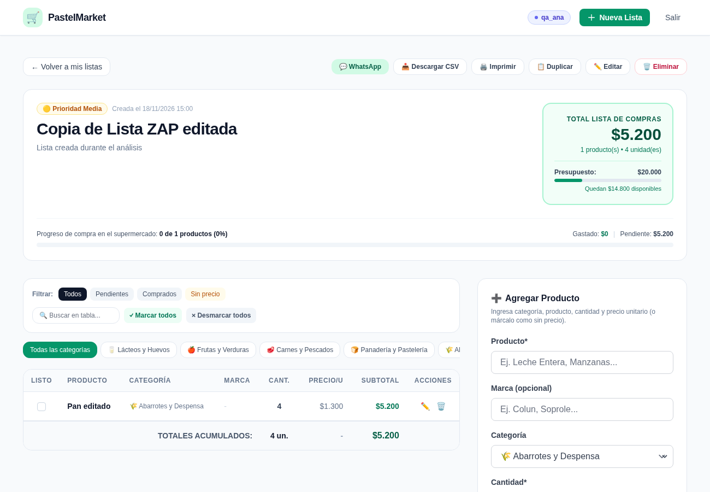
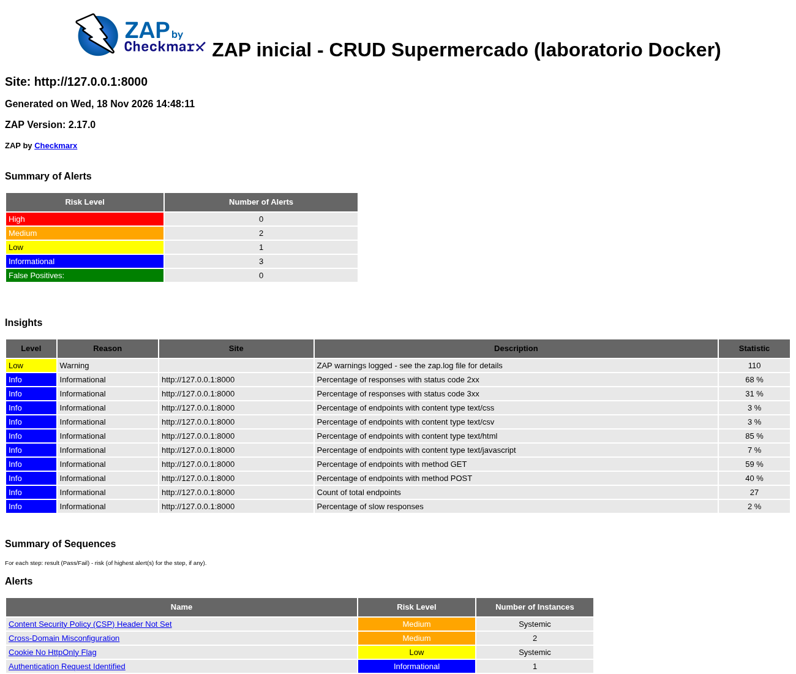
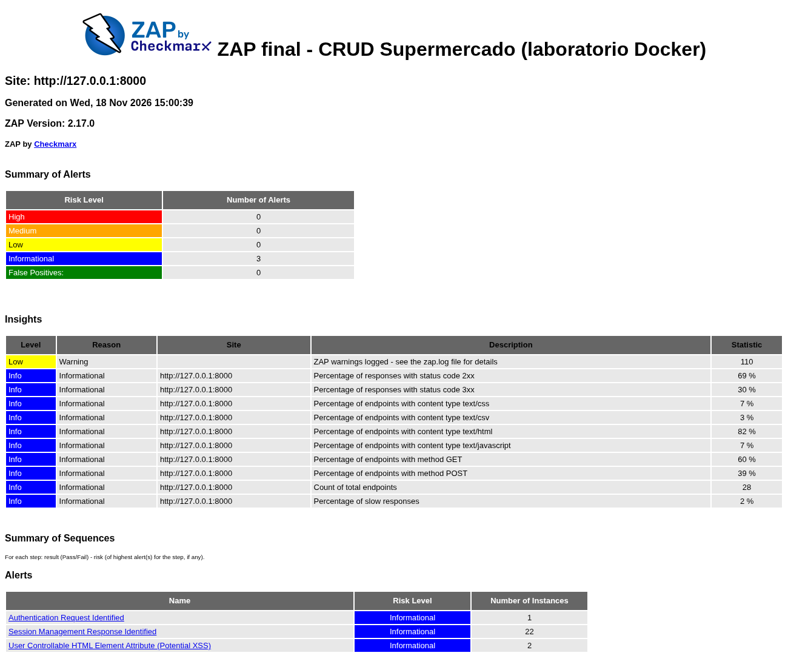
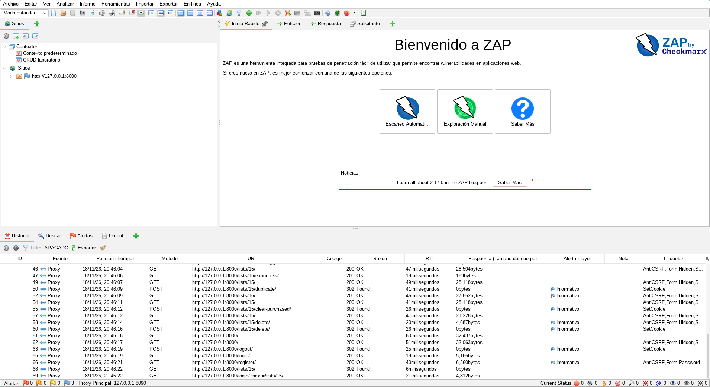

Informe técnico · Aplicación «PastelMarket» (listas de compras)
| Integrantes | Xavier Romero · Alejandro Figueroa |
| Fecha de entrega | 19-11-2026 |
| Repositorio | https://github.com/xaviiromf/desarrollo-seguro-10-09 (público) |
| Pull Request | https://github.com/xaviiromf/desarrollo-seguro-10-09/pull/1 |
| Versión revisada | Rama evaluacion-u3, código en el commit 132443b; imagen supermercado-lab:u3 |
Continuamos el CRUD de la Evaluación 2: una aplicación Django en la que cada usuario crea listas de compras y les agrega productos con cantidad y precio en pesos chilenos. En esta evaluación incorporamos y verificamos la autenticación, atendimos los hallazgos pendientes de SonarQube, ejecutamos la aplicación con Docker Compose y analizamos su tráfico con OWASP ZAP, corrigiendo lo confirmado.
| Elemento | Detalle |
|---|---|
| Integrantes | Xavier Romero · Alejandro Figueroa (aportes en la sección 7) |
| CRUD | Listas de compras «PastelMarket», desarrollado y publicado en la Evaluación 2 |
| Repositorio | https://github.com/xaviiromf/desarrollo-seguro-10-09 (público) |
| Pull Request | https://github.com/xaviiromf/desarrollo-seguro-10-09/pull/1 |
| Versión revisada | Rama evaluacion-u3, commit 132443b; imagen Docker supermercado-lab:u3 |
| Aplicación | Django 6.1.2 · Python 3.12 · SQLite · gunicorn 26.2.0 · WhiteNoise 6.12.0 |
| Laboratorio | Docker Compose en el equipo del equipo, publicado solo en http://127.0.0.1:8000 |
| Cuentas | Ficticias: qa_ana y qa_beto, creadas con manage.py crear_cuentas_prueba; contraseñas solo en .env.lab (no versionado) |
| Herramientas | SonarQube Community Build 26.9.0.129388 (SAST) · OWASP ZAP 2.17.0 (DAST) · pruebas automatizadas de Django |
| Fuera de alcance | El despliegue público en PythonAnywhere no se escaneó, ni ningún sitio de terceros |
Recorrido seguido: (1) recuperar la evidencia de SonarQube de la Evaluación 2; (2) mejorar el código y verificar login y control de acceso; (3) construir y levantar el CRUD con Docker Compose; (4) análisis inicial de ZAP; (5) corregir y reconstruir el contenedor; (6) repetir las pruebas y el análisis para la comparación final.
Partimos del último análisis de la Evaluación 2 (SonarQube 26.9, 20-10-2026): Quality Gate aprobado, 0 vulnerabilidades, 0 security hotspots y 6 code smells pendientes. Al no haber hotspots no hubo revisión contextual que hacer; recordamos que un hotspot exige revisión y no confirma por sí solo una vulnerabilidad. No agregamos exclusiones: solo se excluyen carpetas técnicas (entorno virtual, dependencias, archivos generados y la carpeta de entrega).
| Regla | Archivo | Problema | Tipo e impacto | Prioridad | Decisión técnica |
|---|---|---|---|---|---|
python:S1192 | shopping/views.py:194 | Define a constant instead of duplicating this literal 'shopping:list_detail' 10 times. | Code Smell · Maintainability: High | Media | Corregir: constante LIST_DETAIL_URL |
javascript:S6582 | static/shopping/js/calculator.js:23 | Prefer using an optional chain expression instead, as it's more concise and easier to read. | Code Smell · Maintainability: Low | Baja | Corregir: encadenamiento opcional |
python:S1192 | shopping/views.py:54 | Define a constant instead of duplicating this literal 'shopping:list_index' 3 times. | Code Smell · Maintainability: High | Media | Corregir: constante LIST_INDEX_URL |
python:S1481 | shopping/views.py:374 | Remove the unused local variable "list_pk". | Code Smell · Maintainability: Low | Baja | Corregir: eliminar la variable |
javascript:S3776 | static/shopping/js/calculator.js:59 | Refactor this function to reduce its Cognitive Complexity from 25 to the 15 allowed. | Code Smell · Maintainability: High | Alta | Corregir: dividir la función; al revisarla apareció un XSS en el DOM (2.3) |
javascript:S2486 | static/shopping/js/calculator.js:97 | Handle this exception, don't catch it at all, or explain in a comment why it is ignored. | Code Smell · Maintainability: Low | Media | Corregir: registrar el error y volver al envío normal del formulario |
El último análisis de la Evaluación 2 tenía 28 días y no incluía los cambios de esta evaluación, así que re-escaneamos el código final.
El primer intento analizó también la carpeta de entrega evaluacion_u3/ (informe, reportes HTML de ZAP y scripts), que no es código de la app:
1.113 alertas ajenas y Quality Gate en ERROR. Agregamos evaluacion_u3/** a las exclusiones técnicas, igual que evaluacion_u2/** en la Evaluación 2.
El análisis de la aplicación mostró dos hallazgos nuevos, introducidos por el código de esta evaluación, que corregimos:
docker:S6470 (vulnerabilidad, Security High): el COPY . . del Dockerfile podía meter archivos sensibles a la imagen; ahora se copian solo las carpetas de la app.
Al revisarlo encontramos que .dockerignore excluía node_modules/ solo en la raíz y se colaban 23 MB de dependencias de Node (theme/static_src); ahora no entran.
Web:InputWithoutLabelCheck (bug): el <textarea hidden> del texto de WhatsApp no tenía etiqueta.
Por último, la condición de cobertura del código nuevo fallaba (29,1 %). Agregamos pruebas al comando de cuentas de prueba y excluimos solo de la cobertura
(los archivos siguen analizados) las migraciones, que son código generado, el script semilla init_data.py y el JavaScript, para el que el proyecto no tiene
un framework de pruebas que genere el reporte; el JavaScript se verificó en el navegador (sección 6).
| Métrica | Evaluación 2 (20-10-2026) | Evaluación 3 (18-11-2026) |
|---|---|---|
| Quality Gate | Passed | Passed (cobertura de código nuevo 88,9 %) |
| Vulnerabilidades · Bugs · Hotspots | 0 · 0 · 0 | 0 · 0 · 0 |
| Code smells | 6 | 0 (abiertos: ninguna) |
| Calificaciones (seguridad, confiabilidad, mantenibilidad) | A · A · A | A · A · A |
| Cobertura total | 64,7 % | 82,4 % |


Al refactorizar la función que SonarQube marcaba por complejidad (javascript:S3776) encontramos un XSS en el DOM que la herramienta no señaló: al marcar un producto como comprado, el script tomaba el nombre con textContent (texto sin escapar) y lo volvía a insertar con innerHTML. Un producto llamado <img src=x onerror=…> ejecutaría código.
if (data.is_purchased) {
nameCell.innerHTML = `<s>${nameCell.textContent.trim()}</s>`; // texto del usuario como HTML
}
function applyPurchasedState(row, isPurchased) {
const name = nameCell.textContent.trim();
if (isPurchased) {
const strike = document.createElement('s');
strike.textContent = name; // siempre como texto, nunca como HTML
nameCell.replaceChildren(strike);
} else {
nameCell.replaceChildren(document.createTextNode(name));
}
}
También corregimos un defecto funcional en las vistas de eliminación: desde Django 4, DeleteView procesa el POST en form_valid() y ya no llama a delete(), por lo que los mensajes de confirmación nunca se mostraban. La prueba test_eliminar_producto_propio_muestra_mensaje falla con el código anterior y pasa con el corregido.
El proyecto ya tenía login y control de acceso con el sistema de autenticación de Django. Los revisamos contra cada requisito y escribimos 12 pruebas nuevas que los demuestran.
| Requisito | Cómo se cumple | Prueba |
|---|---|---|
| Login con credenciales válidas | LoginView de Django (UserLoginView) | test_login_valido_redirige_y_crea_sesion |
| Rechazar credenciales inválidas | Formulario de autenticación de Django; no crea sesión | test_login_invalido_rechazado_sin_sesion |
| Cerrar sesión por POST con CSRF | LogoutView solo acepta POST; el formulario lleva {% csrf_token %} | GET → 405 · POST sin token → 403 · POST con token → cierra sesión |
| Rutas privadas protegidas en el servidor | LoginRequiredMixin en las 14 vistas del CRUD | test_anonimo_redirigido_al_login_en_rutas_privadas, test_anonimo_no_puede_escribir |
| Permiso por registro al consultar y escribir | get_queryset() y get_object_or_404(..., user=request.user): lo ajeno responde 404 | test_intruso_no_puede_consultar_ni_modificar_lista_ajena (9 casos), …producto_ajeno (4 casos) |
| Panel de administración | Exige is_staff | test_admin_exige_staff |
Matriz de acceso. El dueño consulta, crea, edita, duplica, exporta y elimina solo sus listas y productos. Otro usuario autenticado no ve ni modifica datos ajenos (404, sin revelar si el registro existe). Un anónimo solo accede al login y al registro. El administrador (is_staff) usa el panel /admin/. Ocultar botones no es el control: la autorización ocurre en el servidor y las pruebas envían las peticiones directamente.
Registro abierto (decisión): lo mantenemos, porque la aplicación es de uso personal y una cuenta nueva no obtiene acceso a datos ajenos. Riesgo residual: creación masiva de cuentas; mejora futura: CAPTCHA o verificación por correo.
| Resultado de las 12 pruebas | Código de la Evaluación 2 | Código corregido |
|---|---|---|
| Login, logout, CSRF, anónimo y permisos (11 pruebas) | 11 pasan: los controles ya eran correctos | 11 pasan |
| Mensaje al eliminar un producto (1 prueba) | Falla: el mensaje nunca se mostraba | Pasa |



/lists/1/ sin sesión: redirige al login.$ curl -s -o /dev/null -w "%{http_code} %{redirect_url}" http://127.0.0.1:8000/ # ruta privada, sin sesión
302 http://127.0.0.1:8000/login/?next=/
$ curl -s -o /dev/null -w "%{http_code} %{redirect_url}" http://127.0.0.1:8000/lists/1/delete/ -X POST
403 # sin sesión ni token CSRF: rechazado antes de llegar a la vista
| Activo | Dónde está | Quién debería acceder | Riesgo | Solución tentativa | Control |
|---|---|---|---|---|---|
| Correo y nombre de usuario (dato personal) | Tabla auth_user | El propio usuario y el administrador | Que otro usuario o un tercero lo consulte o lo extraiga | Minimización: el correo es opcional; no se muestra a otros usuarios | Aplicado |
| Contraseña | auth_user.password | Nadie en texto: solo se verifica | Robo de la base y uso de las contraseñas en otros sitios | Hash PBKDF2-SHA256 con 1.500.000 iteraciones y sal; validadores de contraseña | Aplicado |
| Listas, productos y presupuestos (registro del negocio) | Tablas shopping_* | Solo el dueño | Que otro usuario lea o modifique hábitos de compra y presupuestos | Autorización por registro en el servidor (404 a lo ajeno) | Aplicado y probado |
| Sesión | Cookie sessionid + tabla django_session | Solo el navegador del usuario | Robo de la cookie y suplantación | HttpOnly, SameSite=Lax, expiración de 14 días; Secure en producción | Aplicado; Secure solo con HTTPS |
| Exportación CSV | Respuesta de /lists/<id>/export-csv/ | Solo el dueño de la lista | Extracción masiva de datos de otra cuenta | Misma autorización por registro; no se guarda en caché | Aplicado |
| Clave secreta y contraseñas de prueba | Variables de entorno (.env, .env.lab) | Solo el servidor | Firmar sesiones falsas si se filtra | Fuera de git y de la imagen Docker (.dockerignore) | Aplicado |
| Mecanismo | Propósito en este CRUD | Límite |
|---|---|---|
| Minimización | Pedir solo lo necesario: el correo es opcional | No protege lo que sí se guarda |
| Autorización | Cada consulta se filtra por el usuario de la sesión | Depende de que todas las vistas la apliquen; por eso hay pruebas por cada ruta |
| Hash de contraseñas | Ni nosotros podemos leer la contraseña | Una contraseña débil igual puede adivinarse; no reemplaza limitar los intentos |
| Enmascaramiento | Útil para mostrar el correo parcialmente en una vista | Ocultarlo en una plantilla no impide que una exportación o una API revele el valor original |
| Cifrado en reposo | No lo aplicamos: los datos no tienen una sensibilidad que lo justifique | Si la base se usara para salud o pagos sí haría falta (3.3) |
| Aspecto | Comercio minorista (supermercado) | Salud (farmacia) |
|---|---|---|
| Dato y uso | Productos, cantidades y montos de cada lista, para planificar compras | Los mismos campos, pero los productos son medicamentos o insumos médicos |
| Daño por exposición | Revela hábitos de consumo; daño moderado (publicidad no deseada, perfilamiento) | Revela condiciones de salud (dato sensible): discriminación laboral o de seguros, daño grave y difícil de revertir |
| Acceso y exportación | El dueño puede exportar libremente su CSV | Exportación restringida, justificada y registrada; acceso del personal solo por necesidad clínica |
| Auditoría | No se exige registrar cada consulta | Registro de quién accedió a cada historial y cuándo |
| Control y límite | Autorización por registro (ya implementada). No cubre al administrador, que ve todo | Autorización más cifrado en reposo, auditoría y minimización estricta. Ni el cifrado ni la auditoría impiden el abuso de un usuario autorizado: solo lo dejan registrado |
El proyecto usa el backend django.contrib.sessions.backends.db: la información de la sesión (id del usuario y hash de verificación) se guarda en la tabla django_session, y el navegador solo recibe la clave aleatoria en la cookie sessionid. Al cerrar sesión el registro se invalida en el servidor.
| Cookie | Para qué sirve | Atributos en el laboratorio (HTTP) | En producción (HTTPS) |
|---|---|---|---|
sessionid | Identifica la sesión | HttpOnly · SameSite=Lax · 14 días | Además Secure y HSTS |
csrftoken | Protección CSRF | HttpOnly (corregido, 6.1) · SameSite=Lax | Además Secure |
messages | Mensajes de una sola lectura | HttpOnly · SameSite=Lax · firmada | Además Secure |
al iniciar sesión (POST /login/) Set-Cookie: csrftoken=<oculto>; expires=Wed, 17 Nov 2027 18:01:24 GMT; HttpOnly; Max-Age=31449600; Path=/; SameSite=Lax Set-Cookie: messages=<oculto>; HttpOnly; Path=/; SameSite=Lax Set-Cookie: sessionid=<oculto>; expires=Wed, 02 Dec 2026 18:01:24 GMT; HttpOnly; Max-Age=1209600; Path=/; SameSite=Lax
Las cookies Secure están desactivadas solo en el perfil de laboratorio, porque usa HTTP en 127.0.0.1; en producción van activadas por variable de entorno. Lo registramos como comportamiento contextual.
El navegador y ZAP se ejecutan en el equipo anfitrión. El navegador usa ZAP como proxy y llega al CRUD por http://127.0.0.1:8000, el único puerto publicado, ligado solo a la interfaz local. Ese puerto conduce al contenedor web (gunicorn), que guarda la base SQLite del laboratorio en el volumen lab_data. ZAP analiza esta instancia, no un runserver del anfitrión ni el despliegue público.
| Archivo | Qué hace y por qué es seguro |
|---|---|
Dockerfile | Imagen oficial python:3.12-slim (misma serie que producción), dependencias con versiones fijas desde requirements.txt, estáticos recopilados al construir, usuario sin privilegios (uid 10001) y healthcheck |
compose.yaml | Servicio web con el puerto solo en 127.0.0.1:8000, sistema de archivos de solo lectura, no-new-privileges, sin capacidades de Linux, volumen para SQLite y reinicio automático |
.env.lab.example | Perfil de laboratorio diferenciado: DEBUG=False, ALLOWED_HOSTS=127.0.0.1,localhost, secretos y contraseñas de prueba por variables (valores de ejemplo, sin secretos) |
.dockerignore / .gitignore | Excluyen .env*, bases de datos, entornos virtuales, cachés y archivos ajenos a la construcción |
docker/entrypoint.sh | Aplica migraciones y arranca gunicorn (laboratorio de una instancia) |
README.md | Requisitos, construcción, arranque, migraciones, cuentas de prueba, URL y pruebas |
Respecto del material de apoyo del docente mantuvimos el patrón (imagen slim, volumen para SQLite, WhiteNoise, puerto en 127.0.0.1) y mejoramos: usuario no root, gunicorn en lugar del servidor de desarrollo, versiones fijas y endurecimiento del contenedor.
# Imagen oficial de Python, misma serie (3.12) que el despliegue en PythonAnywhere.
FROM python:3.12-slim
ENV PYTHONDONTWRITEBYTECODE=1 \
PYTHONUNBUFFERED=1 \
PIP_NO_CACHE_DIR=1 \
PIP_DISABLE_PIP_VERSION_CHECK=1
WORKDIR /app
# Usuario sin privilegios; solo /data (base SQLite del laboratorio) es escribible por él.
RUN useradd --system --uid 10001 --no-create-home app \
&& mkdir -p /data && chown app:app /data
# Dependencias primero para aprovechar la caché de capas.
COPY requirements.txt .
RUN pip install -r requirements.txt
# Solo el código de la aplicación, de forma explícita (nada de COPY . .), como propiedad de root:
# el proceso no puede modificarlo y ningún archivo ajeno o secreto entra a la imagen.
COPY manage.py ./
COPY supermarket_project/ supermarket_project/
COPY shopping/ shopping/
COPY theme/ theme/
COPY templates/ templates/
COPY static/ static/
COPY docker/ docker/
...# Laboratorio local de la Evaluación 3: el CRUD corre en Docker y ZAP lo analiza en http://127.0.0.1:8000
services:
web:
build: .
image: supermercado-lab:u3
env_file: .env.lab
environment:
DATABASE_URL: sqlite:////data/db.sqlite3
ports:
- "127.0.0.1:8000:8000" # solo la interfaz local del equipo
volumes:
- lab_data:/data
read_only: true # sistema de archivos de solo lectura, salvo /data y /tmp
tmpfs:
- /tmp
security_opt:
- no-new-privileges:true
cap_drop:
- ALL
restart: unless-stopped
volumes:
lab_data:(fecha: 2026-11-18 14:43 -0300) Python (contenedor): Python 3.12.16 Django (contenedor): 6.1.2 gunicorn (contenedor): gunicorn (version 26.2.0) Docker: Docker version 29.9.2, build a82e528901 Docker Compose version 5.6.1 OWASP ZAP: 2.17.0 # Endurecimiento del contenedor $ docker compose exec web id uid=10001(app) gid=999(app) groups=999(app) $ docker compose exec web touch /app/x touch: cannot touch '/app/x': Read-only file system $ docker compose exec web python manage.py check --deploy (perfil de laboratorio HTTP) System check identified some issues: ?: (security.W004) You have not set a value for the SECURE_HSTS_SECONDS setting. If your entire site is served ?: (security.W008) Your SECURE_SSL_REDIRECT setting is not set to True. Unless your site should be available o ?: (security.W012) SESSION_COOKIE_SECURE is not set to True. Using a secure-only session cookie makes it more ?: (security.W016) You have 'django.middleware.csrf.CsrfViewMiddleware' in your MIDDLEWARE, but you have not s System check identified 4 issues (0 silenced).
Los cuatro avisos de check --deploy corresponden a HTTPS (HSTS, redirección y cookies Secure) y son esperables en un laboratorio HTTP; no aparecen los de clave débil ni de DEBUG.
NAME IMAGE COMMAND SERVICE CREATED STATUS PORTS django-project-web-1 supermercado-lab:u3 "/app/docker/entrypo…" web About a minute ago Up About a minute (healthy) 127.0.0.1:8000->8000/tcp $ curl -sI http://127.0.0.1:8000/login/ HTTP/1.1 200 OK Server: gunicorn Connection: close Content-Type: text/html; charset=utf-8 Expires: Wed, 18 Nov 2026 17:43:47 GMT Cache-Control: max-age=0, no-cache, no-store, must-revalidate, private Vary: Cookie X-Frame-Options: DENY Content-Length: 5125 X-Content-Type-Options: nosniff Referrer-Policy: same-origin Cross-Origin-Opener-Policy: same-origin

| Elemento | Valor |
|---|---|
| Sesión ZAP | u3_inicial (nueva, solo para esta revisión) · 18-11-2026 14:48 |
| Contexto | CRUD-laboratorio, incluye solo http://127\.0\.0\.1:8000.* |
| Objetivo | http://127.0.0.1:8000, imagen supermercado-lab:u3 con login y correcciones de SonarQube, antes de las correcciones motivadas por ZAP |
| Recorrido | Navegador Chromium enrutado por el proxy de ZAP con la cuenta ficticia qa_ana: login, listas (crear, buscar, editar, duplicar, exportar CSV, eliminar), productos (agregar, uno con cantidad 0, editar, marcar, eliminar comprados), logout, registro y una ruta privada sin sesión. Se automatizó con evaluacion_u3/herramientas/recorrido_navegador.mjs para repetir exactamente las mismas acciones en el análisis final |
| Análisis | Pasivo, esperando a que la cola de ZAP llegara a 0. ZAP 2.17.0 en modo daemon para el análisis inicial y final; verificación adicional en ZAP Desktop (6.2) |
| Cobertura | 46 URLs del objetivo registradas (43 rutas distintas). El árbol Sites contiene solo 127.0.0.1:8000: el perfil limpio del navegador no generó tráfico a terceros |
| Reportes | evidencia/zap/inicial/: reporte.html (legible), reporte.json y reporte.md (estructurados), filtrados al objetivo |
Rutas visitadas: , /, /items, /items/3, /items/3/edit, /items/3/edit/, /items/3/toggle, /items/3/toggle/, /lists, /lists/3, /lists/3/, /lists/3/bulk-toggle, /lists/3/bulk-toggle/, /lists/3/clear-purchased, /lists/3/clear-purchased/, /lists/3/delete, /lists/3/delete/, /lists/3/duplicate, /lists/3/duplicate/, /lists/3/edit, /lists/3/edit/, /lists/3/export-csv, /lists/3/export-csv/, /lists/3/items, /lists/3/items/add, /lists/3/items/add/, /lists/4, /lists/4/, /lists/new, /lists/new/, /login, /login/, /logout, /logout/, /register, /register/, /static, /static/css, /static/css/dist, /static/css/dist/styles.css, /static/shopping, /static/shopping/js, /static/shopping/js/calculator.js

| ID | Regla ZAP | Riesgo (confianza) | Ruta · parámetro | Evidencia | Origen | Decisión | Prioridad | CWE |
|---|---|---|---|---|---|---|---|---|
| Z1 | 10038 · Content Security Policy (CSP) Header Not Set | Medium (High) | GET / · — (5 inst.) | (cabecera ausente) | Aplicación propia | Confirmado | Media | CWE-693 |
| Z2 | 10098 · Cross-Domain Misconfiguration | Medium (Medium) | GET /static/css/dist/styles.css · — (2 inst.) | Access-Control-Allow-Origin: * | Tercero (WhiteNoise, configuración por defecto) | Confirmado (bajo impacto: son archivos públicos) | Baja | CWE-264 |
| Z3 | 10010 · Cookie No HttpOnly Flag | Low (Medium) | GET / · csrftoken (5 inst.) | Set-Cookie: csrftoken | Aplicación propia (configuración de Django) | Confirmado | Baja | CWE-1004 |
| Z4 | 10111 · Authentication Request Identified | Informational (High) | POST /login/ · username (1 inst.) | password | Aplicación propia | Contextual (informativo) | — | — |
| Z5 | 10112 · Session Management Response Identified | Informational (Medium) | GET / · csrftoken (22 inst.) | csrftoken | Aplicación propia | Contextual (informativo) | — | — |
| Z6 | 10031 · User Controllable HTML Element Attribute (Potential XSS) | Informational (Low) | GET /?sort=newest&q=Lista · q (2 inst.) | (valor reflejado; ver 5.3) | Aplicación propia | Falso positivo justificado (verificado a mano, 5.3) | — | CWE-20 |
Evidencia de petición y respuesta (sin secretos): en la respuesta de GET /login/ no hay cabecera Content-Security-Policy; GET /static/css/dist/styles.css responde Access-Control-Allow-Origin: *; Set-Cookie: csrftoken=…; SameSite=Lax sin HttpOnly. El detalle completo de cada instancia está en reporte.html.
El análisis pasivo no prueba entradas maliciosas, así que revisamos a mano cómo se usan los datos del usuario en las plantillas.
| ID | Hallazgo | Ubicación | Verificación | Origen | Decisión | Prioridad | Referencia |
|---|---|---|---|---|---|---|---|
| M1 | XSS almacenado: el nombre del producto dentro de onsubmit="return confirm('…')". El navegador decodifica el escape HTML (' → ') antes de ejecutar el JavaScript | shoppinglist_detail.html:310 | Confirmado en el laboratorio: un producto x'+(document.title='XSS-ejecutado')+' ejecutó código al intentar borrarlo | Aplicación propia | Confirmado | Alta | CWE-79 |
| M2 | Datos del usuario dentro de cadenas de un <script> en línea con escape HTML (contexto incorrecto) | shoppinglist_detail.html (texto de WhatsApp) | Revisión de código: un nombre con \ rompe la cadena | Aplicación propia | Requiere investigación → se corrige preventivamente | Media | CWE-79 |
| M3 | Credenciales admin/admin publicadas en la página de login y escritas en init_data.py | registration/login.html, init_data.py | Visible en la página pública | Aplicación propia | Confirmado | Alta | CWE-798 |
| M4 | Páginas privadas sin Cache-Control: el navegador podía guardar datos del usuario | Todas las vistas con sesión | curl -I con sesión: sin Cache-Control | Aplicación propia | Confirmado (preventivo) | Media | CWE-524 |
| M5 | Alerta 10031: q y sort se reflejan en atributos | /?q=…&sort=… | Con q="><script>… la respuesta sale escapada ("><script…) | Aplicación propia | Falso positivo justificado | — | CWE-20 |
Página: /lists/7/
Nombre del producto guardado: x'+(document.title='XSS-ejecutado')+'
Atributo onsubmit tal como lo interpreta el navegador:
return confirm('¿Eliminar x'+(document.title='XSS-ejecutado')+'?');
Título antes del envío: Prueba XSS - Detalle de Lista
Título después de intentar eliminar: XSS-ejecutado
| Categoría | Activo | Actor | Acción | Impacto | Prioridad | Control |
|---|---|---|---|---|---|---|
| S · Suplantación | Cuenta y sesión | Atacante externo | Probar contraseñas en /login/ o usar las credenciales publicadas (M3) | Acceso a las listas de la víctima o al panel de administración | Alta | Credenciales retiradas (M3), validadores de contraseña, hash PBKDF2. Pendiente: limitar intentos de login |
| T · Manipulación | Listas y productos | Usuario autenticado malicioso | Enviar POST directos para modificar datos de otro usuario | Alteración de datos ajenos | Alta | Autorización por registro en el servidor; 13 casos de prueba devuelven 404 |
| I · Divulgación de información | Historial de compras, CSV | Otro usuario o equipo compartido | Abrir /lists/<id>/export-csv/ ajeno o ver páginas en caché tras el logout | Exposición de hábitos y presupuestos | Media | 404 a lo ajeno; Cache-Control: private, no-store (M4) |
| E · Elevación de privilegios | Sesión del usuario | Atacante que logra que la víctima vea un producto manipulado | XSS almacenado (M1) para actuar con la sesión de la víctima | Acciones en nombre de la víctima | Alta | Escape correcto por contexto, sin manejadores en línea, CSP sin unsafe-inline |
| R · Repudio | Acciones sobre listas | Usuario legítimo | Negar haber borrado una lista | Sin trazabilidad | Baja | Pendiente: registro de auditoría (no exigido para este dato; sí en salud, 3.3) |
Las fallas de autorización (T e I) no las señala ZAP en un análisis pasivo; por eso las verificamos con pruebas manuales y automatizadas.
| Hallazgo | Causa | Cambio | Commit | Prueba | Resultado |
|---|---|---|---|---|---|
M1 XSS en onsubmit (Alta) | Dato del usuario en JavaScript dentro de un atributo | Texto en data-confirm, leído como dato por static/shopping/js/ui.js | b73372e | Misma carga en el laboratorio + test_nombre_de_producto_no_llega_a_codigo_ejecutable | Resuelto: se muestra como texto |
| M3 Credenciales publicadas (Alta) | Aviso de ayuda en la plantilla y contraseñas en el script semilla | Aviso eliminado; init_data.py lee las contraseñas del entorno | c35d594 | test_login_no_publica_credenciales | Resuelto |
| Z1 / 10038 CSP ausente (Media) | No había política | CSP nativa de Django 6: default-src 'self', sin unsafe-inline, frame-ancestors 'none'. Código y estilos en línea movidos a ui.js y print.css | b73372e | Recorrido completo en Chromium: 0 violaciones de CSP y 0 errores de JavaScript; test_csp_presente_y_sin_codigo_en_linea | Resuelto |
| M2 Script en línea (Media) | Escape HTML dentro de cadenas JavaScript | El texto de WhatsApp lo arma el servidor en un <textarea hidden> (escape HTML correcto ahí) | b73372e | Sin <script> en la página (prueba) | Resuelto |
| M4 Caché de páginas privadas (Media) | Sin cabecera | PrivateNoStoreMiddleware: Cache-Control: private, no-store con sesión | b73372e | test_paginas_privadas_no_se_guardan_en_cache | Resuelto |
| Z2 / 10098 CORS en estáticos (Baja) | Valor por defecto de WhiteNoise | WHITENOISE_ALLOW_ALL_ORIGINS = False | b73372e | curl -I al estático: sin Access-Control-Allow-Origin | Resuelto |
| Z3 / 10010 csrftoken sin HttpOnly (Baja) | Valor por defecto de Django | CSRF_COOKIE_HTTPONLY = True (el JavaScript toma el token del formulario) | b73372e | test_cookie_csrf_httponly | Resuelto |
<form action="{% url 'shopping:item_delete' item.id %}" method="post"
onsubmit="return confirm('¿Eliminar {{ item.name }}?');">
<form action="{% url 'shopping:item_delete' item.id %}" method="post"
data-confirm="¿Eliminar {{ item.name }}?">
// static/shopping/js/ui.js
form.addEventListener('submit', (e) => {
if (!window.confirm(form.dataset.confirm)) e.preventDefault();
});
SECURE_CSP = {
"default-src": [CSP.SELF], "script-src": [CSP.SELF], "style-src": [CSP.SELF],
"img-src": [CSP.SELF, "data:"], "form-action": [CSP.SELF],
"frame-ancestors": [CSP.NONE], "base-uri": [CSP.SELF], "object-src": [CSP.NONE], ...
}
CSRF_COOKIE_HTTPONLY = True
WHITENOISE_ALLOW_ALL_ORIGINS = False
Página: /lists/10/ Nombre del producto guardado: x'+(document.title='XSS-ejecutado')+' Atributo data-confirm (texto, no código): ¿Eliminar x'+(document.title='XSS-ejecutado')+'? Título antes del envío: Prueba XSS - Detalle de Lista Título después de intentar eliminar: Prueba XSS - Detalle de Lista
Repetimos el análisis en una sesión nueva (u3_final, 18-11-2026) con el mismo contexto, la misma cuenta y el mismo recorrido automatizado. Comparamos las acciones de ambos recorridos y son idénticas, así que ninguna alerta desapareció por dejar de visitar una ruta.
| Alerta ZAP | Riesgo | Instancias inicial | Instancias final | Estado |
|---|---|---|---|---|
| 10038 · Content Security Policy (CSP) Header Not Set | Medium (High) | 5 | 0 | Resuelto |
| 10098 · Cross-Domain Misconfiguration | Medium (Medium) | 2 | 0 | Resuelto |
| 10010 · Cookie No HttpOnly Flag | Low (Medium) | 5 | 0 | Resuelto |
| 10111 · Authentication Request Identified | Informational (High) | 1 | 1 | Contextual |
| 10112 · Session Management Response Identified | Informational (Medium) | 22 | 22 | Contextual |
| 10031 · User Controllable HTML Element Attribute (Potential XSS) | Informational (Low) | 2 | 2 | Falso positivo |

Verificación complementaria en ZAP Desktop. Repetimos el recorrido con ZAP Desktop 2.17.0 (interfaz gráfica), sesión u3_desktop y contexto CRUD-laboratorio, con un Chromium visible enrutado por su proxy: 69 mensajes, el árbol Sites contiene solo el objetivo y no hay alertas altas, medias ni bajas (solo las 3 informativas). Reporte en evidencia/zap/desktop/.

Pruebas automatizadas: 44 pruebas pasan (validación de la Evaluación 2, autenticación y autorización, cabeceras, XSS y el comando de cuentas de prueba).
django-axes o limitación en el proxy.SAST frente a DAST. SonarQube (SAST) lee el código sin ejecutarlo: nos dio reglas de mantenibilidad y, al atenderlas, nos llevó a un XSS que no marcaba. ZAP (DAST) observa la aplicación en ejecución: detectó lo que solo se ve en las respuestas reales (CSP ausente, CORS en los estáticos, atributos de cookies), cosas que el código fuente no muestra porque dependen de configuración y de librerías de terceros. Ninguno de los dos detectó los problemas más graves: el XSS almacenado en el atributo onsubmit, las credenciales publicadas en el login y las fallas de autorización, que solo aparecen con revisión manual y pruebas dirigidas.
Efectividad de los cambios. Las tres alertas de ZAP de riesgo medio y bajo desaparecieron con el mismo recorrido; los dos hallazgos manuales de prioridad alta se confirmaron antes y se verificaron corregidos después; SonarQube cerró los 6 hallazgos heredados y los 2 nuevos con el Quality Gate aprobado, y 44 pruebas automatizadas dejan fijo el comportamiento. La CSP se probó en todas las páginas del recorrido sin violaciones.
Riesgos residuales. Falta limitar intentos de login, no hay auditoría de acciones, el registro es abierto y el laboratorio usa HTTP. Un análisis pasivo no reemplaza un análisis activo ni una prueba de penetración: el informe no afirma que la aplicación esté libre de vulnerabilidades.
| Integrante | Aporte técnico |
|---|---|
| Xavier Romero | Continuidad de SonarQube y correcciones de código; verificación de login y autorización con pruebas; laboratorio Docker; análisis inicial y final con ZAP; correcciones de seguridad (CSP, XSS, cookies, caché) |
| Alejandro Figueroa | Inventario de activos y mecanismos de protección; comparación de industrias; análisis de amenazas STRIDE; redacción y revisión del informe |
evaluacion-u3)| Anexo | Enlace |
|---|---|
| Pull Request | /pull/1 |
| Reporte ZAP inicial (HTML, JSON, MD, URLs, árbol Sites) | /tree/evaluacion-u3/evaluacion_u3/evidencia/zap/inicial |
| Reporte ZAP final | /tree/evaluacion-u3/evaluacion_u3/evidencia/zap/final |
| Verificación en ZAP Desktop | /tree/evaluacion-u3/evaluacion_u3/evidencia/zap/desktop |
| SonarQube (métricas, issues y capturas) | /tree/evaluacion-u3/evaluacion_u3/evidencia/sonarqube |
| Pruebas de acceso antes y después | /tree/evaluacion-u3/evaluacion_u3/evidencia/login |
| Verificación manual (XSS, alerta 10031) | /tree/evaluacion-u3/evaluacion_u3/evidencia/manual |
| Docker (construcción, servicio, versiones) | /tree/evaluacion-u3/evaluacion_u3/evidencia/docker |
| Sesiones y cookies | /tree/evaluacion-u3/evaluacion_u3/evidencia/sesiones |
| Herramientas reproducibles (recorrido y control de ZAP) | /tree/evaluacion-u3/evaluacion_u3/herramientas |
| Instrucciones del laboratorio (README) | /blob/evaluacion-u3/README.md |